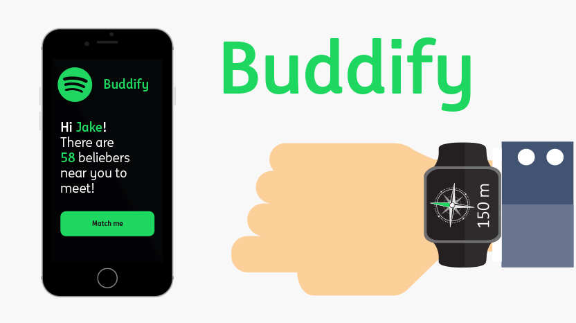

Highlights
Music freak
At the start off this project I researched the music freak. What or who would be the definition of a
music freak? To better understand the target audience, I created a persona named Jake as a
guideline. Jake is not just a music freak, but a Belieber. For those that are unknown with this
term, a Belieber is someone crazy about his idol Justin Bieber. And thus a perfect example to focus
my project on
Storyboard
This whole concept is about the story of Jake. Read below of how Buddify changed Jake's life.

This is Jake. Jake represents my target audience during this storyboard.

Jake is always listening to the music of Justin Bieber. There is not a day that goes by that he
doesn’t turn on some of his hits.
Jake is even that big a fan that he imitates Biebers lifestyle. Nowadays he has the same haircut and
wears the same clothing.
Just listening to Biebers hits isn’t enough for Jake. He wants to share his opinion with other
Beliebers on forums and isn’t afraid to participate in discussions.

Whenever there is a festival where Justin Bieber will be performing, Jake makes sure he is attending!

At these festivals, Jake would like to meet other Beliebers, but he is afraid to just start talking
to random people. And when he tries, well... It's a bunch of stutters and incoherent speech. More
often than not this ends in an eyebrow turned up.

That is why I am introducing Buddify! Buddify is an app where you can start topics on a forum about
your idols and share your opinion. There is even an option to make and share vlogs about your
favorite subject. You can also befriend other fans in this app and become 'buddies'.
In this app you can use the function 'buddify me' and you will be matched to a fellow belieber or
any other idol you like.
On the bracelet, you will see a compass. Just follow the green arrow, while at the same time your
match will follow theirs and you will meet up in the middle somewhere. Whenever you are near, you
will be able to see each other's profile pictures so you can recognize your match.
Jake meets his match, Els. This time is not so socially awkward because they meet for a reason.
During this meeting, they talk all about Bieber.

After their meet-up Jake and Els become buddies!

Buddify, the app that brings the music freaks together!